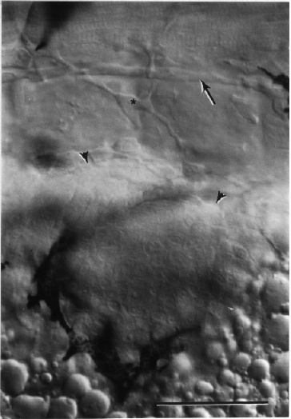

Modified from: Kimmel et al., 1955. Developmental Dynamics 203:253-310. Copyright © 1995 Wiley-Liss, Inc. Reprinted only by permission of Wiley-Liss, a subsidiary of John Wiley & Sons, Inc.
Fig. 36. Condensing mesenchyme of the early pectoral fin bud. The view is along the proximal-distal axis of the bud, at the dorsolateral aspect of the embryo's left side. Dorsal is to the top and anterior is to the left. Nomarski optics at the prim-15 stage (30 h). The bud is outlined by melanophores anteriorly and ventrally, and arrowheads dorsally. The posterior lateral line nerve runs superficial to the horizontal myoseptum in the upper part of the field (arrow). Cross-striations of muscle fibers (in myotomes 2 and 3) are in focus above the nerve, and a mesenchymal cell, present just deep the epidermis, is in focus between the nerve and the bud (star). Refractile yolk granules are at the bottom of the field. Scale bar: 50 µm.

Figure 36